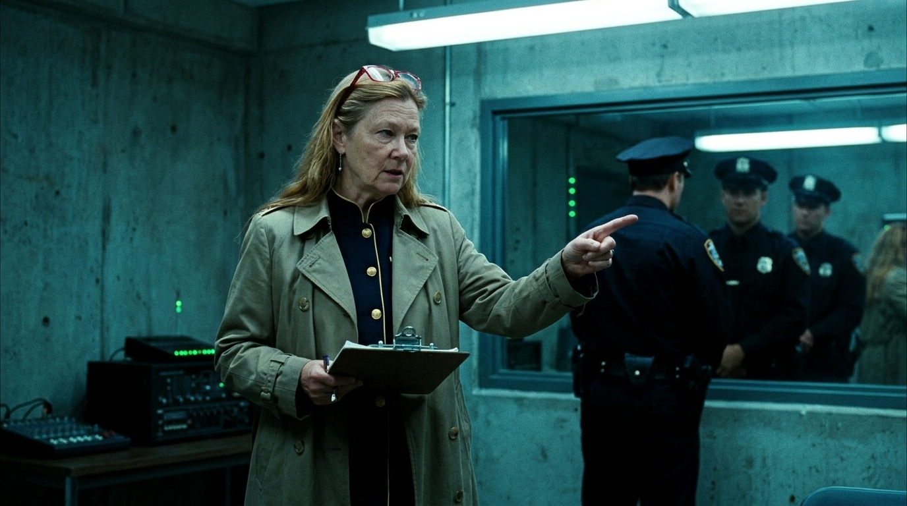
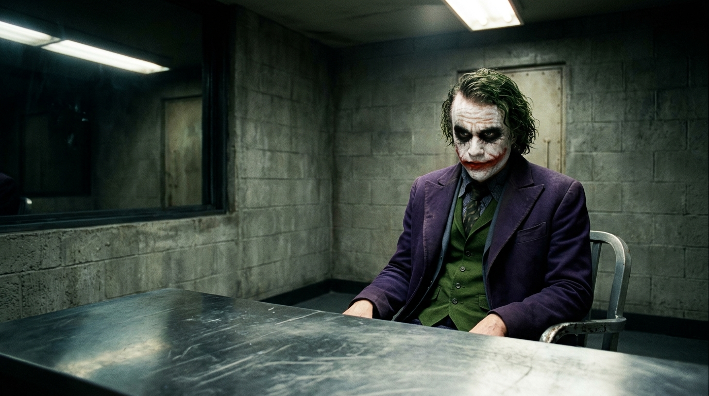
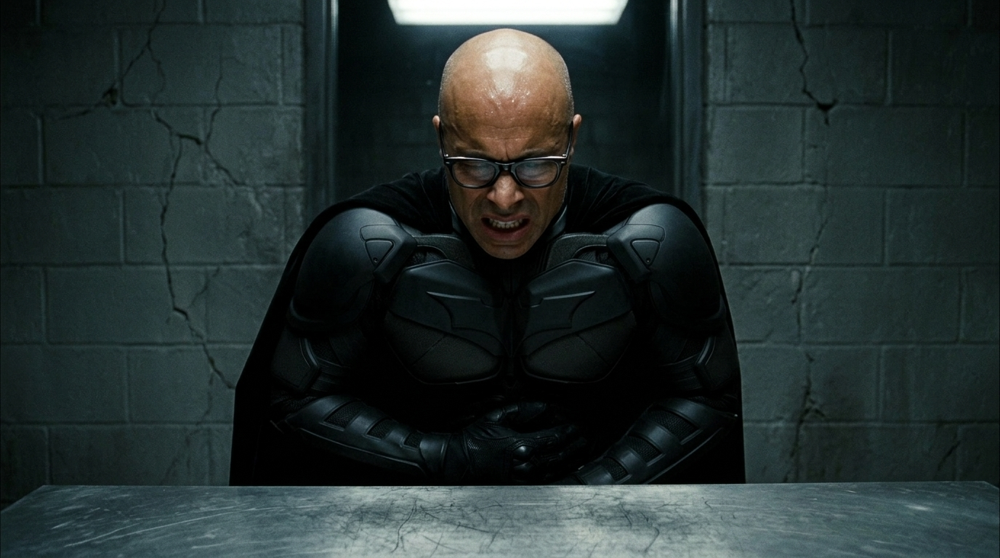
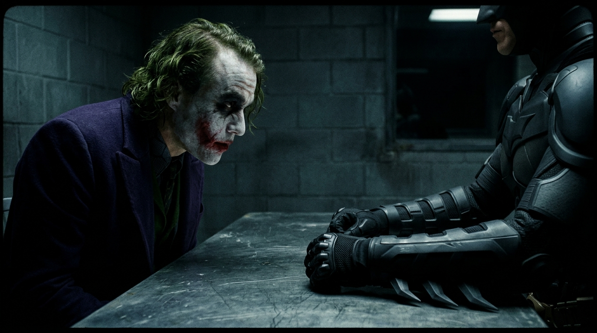
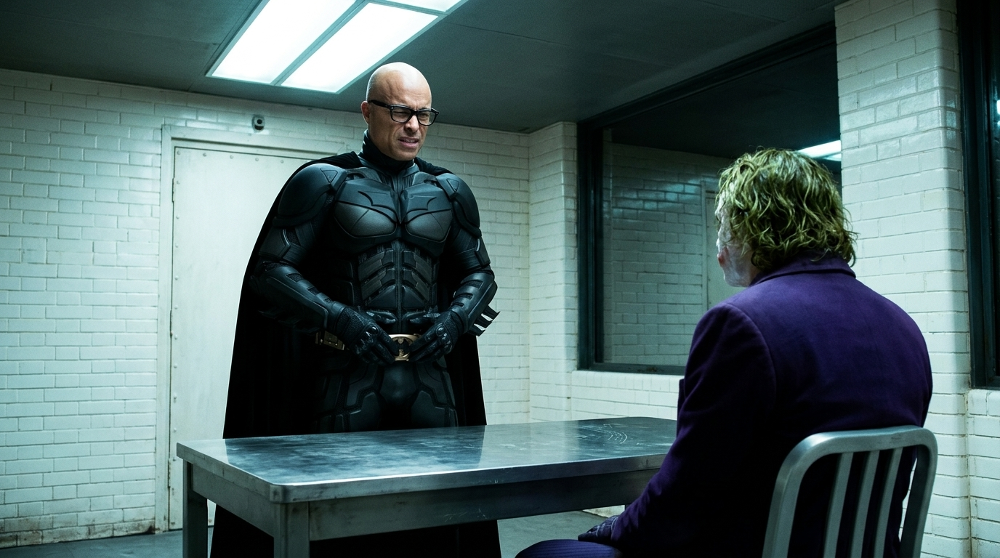
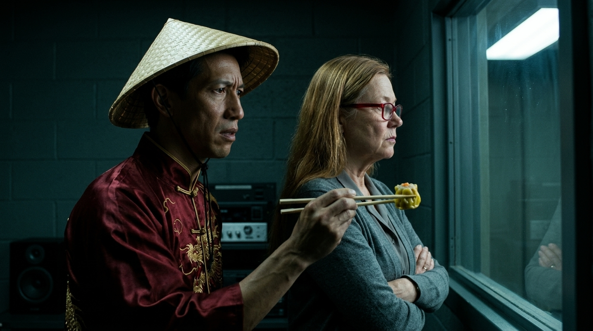
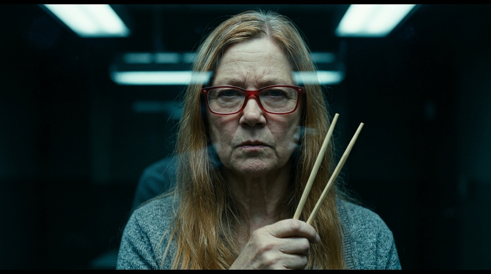
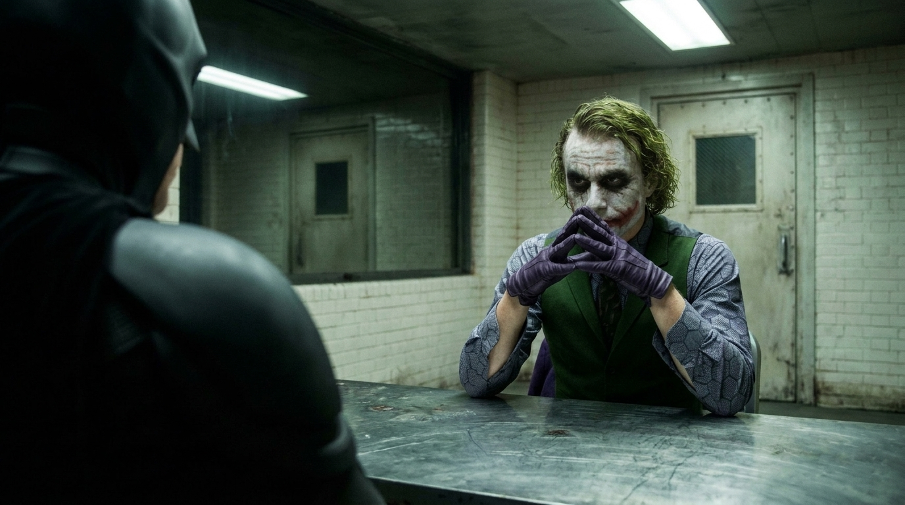
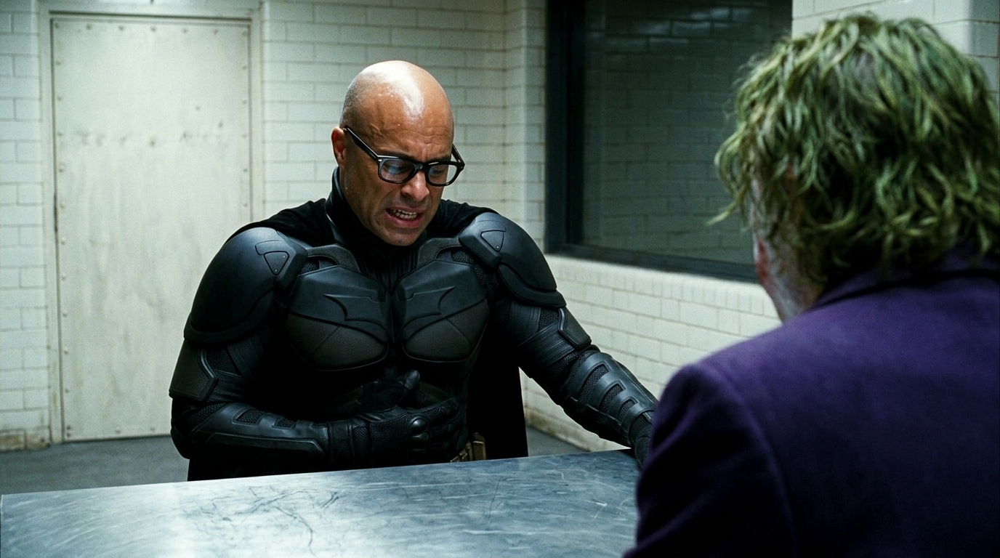
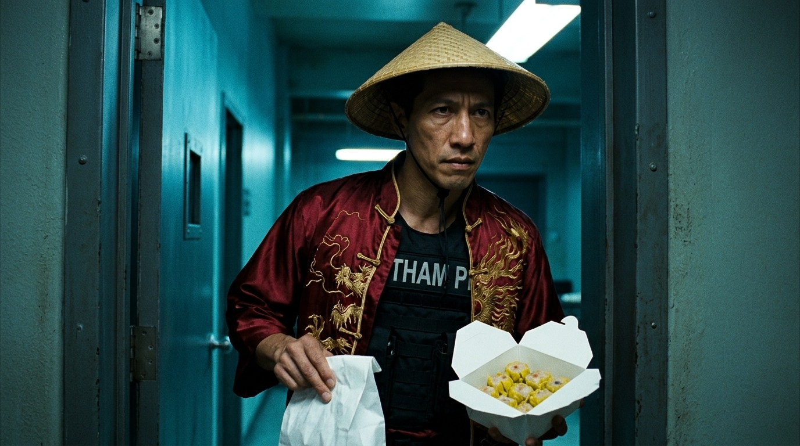

IMAX 65mm & 35mm Panavision · Damon, Deron, Hooman, Gigi & The Joker · Ingredient Prep: 25m 37s · Render Time: In progress on L4: Shots 1-12, 14, 15 & 18 approved (15/20); DK_13, 16, 17 & 19 queued for locked-camera re-render; rendering Shot 20/20
Original movie frames extracted directly from the scene to match camera angles, lenses, lighting contrast, and color palette.
Every keyframe, spoken line, duration, and prompt queued for MiniMax H3 prior to rendering.

DK_DK_01 · Gigi (10.1s)
Keyframe: dk_shot01_gigi_obs.jpg
Line: "One, two, three, eyes on me. Inside voices behind the glass, Deron. Criss-cross your tactical vest."
Prompt: <Picture 1> is the exact starting frame of this photorealistic 35mm Nolan interrogation room scene.
<Audio 1> is the exact spoken dialogue audio track for the woman in the tan trench coat in <Picture 1>.
Keep the camera framing locked on <Picture 1> with only a slow 2% push-in. The woman points toward the observation glass and speaks <Audio 1> with exact lip sync while the two uniformed police officers remain still behind her. Do NOT pan away or introduce any other people or creatures. Subtle 35mm film grain.

DK_DK_02 · The Joker (7.3s)
Keyframe: dk_shot02_joker_table.jpg
Line: "Good evening, Commissioner. You brought the big bat... and a detective wearing a silk bathrobe."
Prompt: <Picture 1> is the exact starting frame of this photorealistic 35mm live-action movie scene.
<Audio 1> is the exact spoken dialogue audio track for the speaking character in <Picture 1> and is reused verbatim.
Keep every character face, costume, lighting, lens, and set geometry strictly faithful to <Picture 1>. IMAX 65mm 50mm close-up inside dark interrogation room; Joker's face half-carved in sickly overhead green-cyan pools against pitch-black cinderblock. The Joker sits slumped forward, eyes flicking from Damon's hunched shadow toward the two-way mirror, tongue flicking at his scarred cheek.
Subtle controlled cinema camera movement, natural live-action performance, exact lip sync to <Audio 1>, subtle 35mm film grain.
Do NOT pan away, cut, or invent off-screen characters. Keep camera framing tightly anchored to <Picture 1> with only a slow 3-5% cinema push-in and natural realistic body/mouth physics.

DK_DK_03 · Damon (8.0s)
Keyframe: dk_shot03_damon_batman.jpg
Line: "Where is Harvey Dent? Also, hypothetically, where is the nearest unlocked bathroom on this floor?"
Prompt: <Picture 1> is the exact starting frame of this photorealistic IMAX 65mm Nolan interrogation room scene.
<Audio 1> is the exact spoken dialogue audio track for the bald man with glasses in the matte-black Batsuit in <Picture 1>.
Keep the camera framing strictly locked straight-on to <Picture 1> facing the man in the Batsuit at the steel table. He grips his gauntlets on the table and winces in stomach discomfort while speaking <Audio 1> with exact lip sync. Do NOT orbit behind anyone or morph faces. Subtle 35mm film grain.

DK_DK_04 · The Joker (7.3s)
Keyframe: dk_shot04_joker_profile.jpg
Line: "Never start with the head. Wait—are you trembling? Let's put a smile on that colon."
Prompt: <Picture 1> is the exact starting frame of this photorealistic 35mm live-action movie scene.
<Audio 1> is the exact spoken dialogue audio track for the speaking character in <Picture 1> and is reused verbatim.
Keep every character face, costume, lighting, lens, and set geometry strictly faithful to <Picture 1>. Panavision 50mm tight two-shot profile; shallow depth of field across the pitted metal table under flickering cyan tube. The Joker leans smoothly across the table, studying Damon's trembling knuckles and sweat-slick jaw with genuine fascination.
Subtle controlled cinema camera movement, natural live-action performance, exact lip sync to <Audio 1>, subtle 35mm film grain.
Do NOT pan away, cut, or invent off-screen characters. Keep camera framing tightly anchored to <Picture 1> with only a slow 3-5% cinema push-in and natural realistic body/mouth physics.

DK_DK_05 · Damon (8.0s)
Keyframe: dk_shot05_damon_blinds.jpg
Line: "Not trembling. I took two expired Maurten hydrogels before patrol. I've raced Lake Placid on worse."
Prompt: <Picture 1> is the exact starting frame of this photorealistic 35mm live-action movie scene.
<Audio 1> is the exact spoken dialogue audio track for the speaking character in <Picture 1> and is reused verbatim.
Keep every character face, costume, lighting, lens, and set geometry strictly faithful to <Picture 1>. HARD CUT TO FULL FLUORESCENT BLAST: 35mm wide 28mm shot as overhead sodium-vapor and unfiltered white tubes slam on, flooding the concrete room in brutal clinical glare. Blinded momentarily by the sudden white glare, Damon grips his stomach over the kevlar bat-symbol, glaring down at Joker with zero loss of composure.
Subtle controlled cinema camera movement, natural live-action performance, exact lip sync to <Audio 1>, subtle 35mm film grain.
Do NOT pan away, cut, or invent off-screen characters. Keep camera framing tightly anchored to <Picture 1> with only a slow 3-5% cinema push-in and natural realistic body/mouth physics.

DK_DK_06 · Deron (5.9s)
Keyframe: dk_shot06_deron_obs.jpg
Line: "Aiya, Damon! Why you no drink hot water lah? Inside look worse than San Gabriel dim sum rush!"
Prompt: <Picture 1> is the exact starting frame of this photorealistic 35mm live-action movie scene.
<Audio 1> is the exact spoken dialogue audio track for the speaking character in <Picture 1> and is reused verbatim.
Keep every character face, costume, lighting, lens, and set geometry strictly faithful to <Picture 1>. Observation room 35mm tight two-shot; harsh white spill from the two-way glass illuminates Deron's conical hat brim and red silk dragon embroidery. Deron taps the glass anxiously with bamboo chopsticks holding a steamed siu mai while peering into the bright interrogation room.
Subtle controlled cinema camera movement, natural live-action performance, exact lip sync to <Audio 1>, subtle 35mm film grain.
Do NOT pan away, cut, or invent off-screen characters. Keep camera framing tightly anchored to <Picture 1> with only a slow 3-5% cinema push-in and natural realistic body/mouth physics.

DK_DK_07 · Gigi (10.1s)
Keyframe: dk_shot07_gigi_chopsticks.jpg
Line: "No dim sum in observation, Deron! Your behavior clip goes straight to red if you touch that glass."
Prompt: <Picture 1> is the exact starting frame of this photorealistic 35mm Nolan interrogation room scene.
<Audio 1> is the exact spoken dialogue audio track for the woman holding chopsticks in <Picture 1>.
Keep camera framing locked on <Picture 1> through the observation glass. She glares fiercely while holding the wooden chopsticks and speaking <Audio 1> with exact lip sync. Do NOT pan away or introduce off-screen people. Subtle 35mm film grain.

DK_DK_08 · The Joker (9.4s)
Keyframe: dk_shot08_joker_bright.jpg
Line: "See, madness is like gravity. All it takes is one bad burrito... and a little push."
Prompt: <Picture 1> is the exact starting frame of this photorealistic 35mm live-action movie scene.
<Audio 1> is the exact spoken dialogue audio track for the speaking character in <Picture 1> and is reused verbatim.
Keep every character face, costume, lighting, lens, and set geometry strictly faithful to <Picture 1>. IMAX 65mm 50mm circling slowly behind The Joker in stark white overhead interrogation light; crisp metallic bokeh on cinderblock paint. The Joker rests his chin on steepled purple-gloved fingers, tilting his head calmly as Damon breathes slowly through his nose.
Subtle controlled cinema camera movement, natural live-action performance, exact lip sync to <Audio 1>, subtle 35mm film grain.
Do NOT pan away, cut, or invent off-screen characters. Keep camera framing tightly anchored to <Picture 1> with only a slow 3-5% cinema push-in and natural realistic body/mouth physics.

DK_DK_09 · Damon (7.3s)
Keyframe: dk_shot09_damon_bright.jpg
Line: "Word. Keep talking while I hold a Zone-five core brace. You think you scare me, clown?"
Prompt: <Picture 1> is the exact starting frame of this photorealistic 35mm live-action movie scene.
<Audio 1> is the exact spoken dialogue audio track for the speaking character in <Picture 1> and is reused verbatim.
Keep every character face, costume, lighting, lens, and set geometry strictly faithful to <Picture 1>. Handheld 35mm 40mm tight shoulder-height smash-angle as Damon braces over the steel table under blistering top light. Damon slams Joker's forehead gently onto the metal tabletop, then freezes stiff as a deep rumble shakes his own utility belt.
Subtle controlled cinema camera movement, natural live-action performance, exact lip sync to <Audio 1>, subtle 35mm film grain.
Do NOT pan away, cut, or invent off-screen characters. Keep camera framing tightly anchored to <Picture 1> with only a slow 3-5% cinema push-in and natural realistic body/mouth physics.

DK_DK_10 · Deron (5.9s)
Keyframe: dk_shot04_deron_door.jpg
Line: "Wah, Joker! You look hungry lah! Eat my Monterey Park siu mai and Po Chai Pill, good or not?"
Prompt: <Picture 1> is the exact starting frame of this photorealistic 35mm live-action movie scene.
<Audio 1> is the exact spoken dialogue audio track for the speaking character in <Picture 1> and is reused verbatim.
Keep every character face, costume, lighting, lens, and set geometry strictly faithful to <Picture 1>. Wide 28mm interrogation room shot toward heavy steel entry door; clinical fluorescent light hits Deron's vibrant crimson dragon robe and straw conical hat. Deron kicks open the heavy steel door holding a crinkly 99 Ranch bag, an iced brown sugar boba cup, and tiny yellow-boxed Po Chai Pills, offering them straight to Joker.
Subtle controlled cinema camera movement, natural live-action performance, exact lip sync to <Audio 1>, subtle 35mm film grain.
Do NOT pan away, cut, or invent off-screen characters. Keep camera framing tightly anchored to <Picture 1> with only a slow 3-5% cinema push-in and natural realistic body/mouth physics.
DK_DK_11 · The Joker (6.6s)
Keyframe: dk_shot11_joker_low.jpg
Line: "And who are you supposed to be? Do I look like a guy who ordered room service?"
Prompt: <Picture 1> is the exact starting frame of this photorealistic 35mm live-action movie scene.
<Audio 1> is the exact spoken dialogue audio track for the speaking character in <Picture 1> and is reused verbatim.
Keep every character face, costume, lighting, lens, and set geometry strictly faithful to <Picture 1>. IMAX 65mm 75mm dead-on close-up of The Joker staring up from the steel table in sterile top light. The Joker blinks slowly beneath smudged black eye paint, staring straight up at Deron's conical bamboo hat brim.
Subtle controlled cinema camera movement, natural live-action performance, exact lip sync to <Audio 1>, subtle 35mm film grain.
Do NOT pan away, cut, or invent off-screen characters. Keep camera framing tightly anchored to <Picture 1> with only a slow 3-5% cinema push-in and natural realistic body/mouth physics.
DK_DK_12 · Deron (6.6s)
Keyframe: dk_shot12_deron_pills.jpg
Line: "You got zero ring, like Clippers in May lah! Even BLACKPINK concert got better security than Gotham!"
Prompt: <Picture 1> is the exact starting frame of this photorealistic 35mm live-action movie scene.
<Audio 1> is the exact spoken dialogue audio track for the speaking character in <Picture 1> and is reused verbatim.
Keep every character face, costume, lighting, lens, and set geometry strictly faithful to <Picture 1>. 35mm low-angle medium shot of Deron leaning against the stark white cinderblocks, looking down Deron points sternly at Joker with a small vial of herbal stomach pills, adjusting his red silk dragon sleeve over his GCPD badge.
Subtle controlled cinema camera movement, natural live-action performance, exact lip sync to <Audio 1>, subtle 35mm film grain.
Do NOT pan away, cut, or invent off-screen characters. Keep camera framing tightly anchored to <Picture 1> with only a slow 3-5% cinema push-in and natural realistic body/mouth physics.
DK_DK_13 · Hooman (9.4s)
Keyframe: dk_shot05_hooman_tv.jpg
Line: "Chee-chee-chettore! Damon, baba, you have diarrhea in Batsuit, dood? Why you no wear Magic Cone, huuuuh?"
Prompt: <Picture 1> is the exact starting frame of this photorealistic 35mm live-action movie scene.
<Audio 1> is the exact spoken dialogue audio track for the speaking character in <Picture 1> and is reused verbatim.
Keep every character face, costume, lighting, lens, and set geometry strictly faithful to <Picture 1>. Fixed static medium shot from behind the three solid GCPD officers looking toward the wall-mounted CRT monitor in the top-left corner. Keep the officers' dark uniforms completely solid and stationary in the foreground while Hooman inside the CRT screen speaks cheerfully in his gold conical hat and collar, holding up his white funnel with subtle CRT phosphor flicker.
Keep camera framing 100% locked to <Picture 1> with ZERO zoom or pan past the officers, NO screen glitches, natural live-action performance, exact lip sync to <Audio 1>, subtle 35mm film grain.
DK_DK_14 · Gigi (7.3s)
Keyframe: dk_shot14_gigi_interrogation.jpg
Line: "Turn that monitor off right now, Hooman! In Gotham Police we sit down and use flushable wipes!"
Prompt: <Picture 1> is the exact starting frame of this photorealistic 35mm live-action movie scene.
<Audio 1> is the exact spoken dialogue audio track for the speaking character in <Picture 1> and is reused verbatim.
Keep every character face, costume, lighting, lens, and set geometry strictly faithful to <Picture 1>. 35mm medium tracking shot as Gigi strides into the interrogation room doorway under blinding ceiling lights, face thunderous. Gigi points her wooden classroom pointer straight up at the corner CCTV monitor, ignoring Joker completely.
Subtle controlled cinema camera movement, natural live-action performance, exact lip sync to <Audio 1>, subtle 35mm film grain.
Do NOT pan away, cut, or invent off-screen characters. Keep camera framing tightly anchored to <Picture 1> with only a slow 3-5% cinema push-in and natural realistic body/mouth physics.
DK_DK_15 · Hooman (8.7s)
Keyframe: dk_shot15_hooman_crt_tight.jpg
Line: "Joker, dood! Fuck that shit, dood! Fifty-fifty on Magic Cone Personal—even Elon Musk want one, huuuuh?"
Prompt: <Picture 1> is the exact starting frame of this photorealistic 35mm live-action movie scene.
<Audio 1> is the exact spoken dialogue audio track for the speaking character in <Picture 1> and is reused verbatim.
Keep every character face, costume, lighting, lens, and set geometry strictly faithful to <Picture 1>. Tight 75mm telephoto crop onto the buzzing CRT monitor glass; Hooman's gold suit glows against scanline phosphor flicker. On the CCTV screen, Hooman waves a gleaming gilded Magic Cone in one hand and a brochure toward the Joker.
Subtle controlled cinema camera movement, natural live-action performance, exact lip sync to <Audio 1>, subtle 35mm film grain.
Do NOT pan away, cut, or invent off-screen characters. Keep camera framing tightly anchored to <Picture 1> with only a slow 3-5% cinema push-in and natural realistic body/mouth physics.
DK_DK_16 · Gigi (7.3s)
Keyframe: dk_shot16_gigi_table.jpg
Line: "Do NOT say Elon Musk in my precinct! His ugly dumpster truck is on the Boonton thinking mat!"
Prompt: <Picture 1> is the exact starting frame of this photorealistic 35mm live-action movie scene.
<Audio 1> is the exact spoken dialogue audio track for the speaking character in <Picture 1> and is reused verbatim.
Keep every character face, costume, lighting, lens, and set geometry strictly faithful to <Picture 1>. Fixed static camera shot anchored strictly to <Picture 1>. Keep The Joker completely solid and stationary on the left side of the frame (ZERO fading or transparency) as Gigi slams both hands firmly onto the steel interrogation table beside the clear plastic cup and speaks angrily toward him.
Keep camera framing 100% locked with ZERO push-in or zoom past The Joker, natural live-action performance, exact lip sync to <Audio 1>, subtle 35mm film grain.
DK_DK_17 · The Joker (8.7s)
Keyframe: dk_shot17_joker_sideways.jpg
Line: "She's scarier than you. Look at her. That's pure, unmedicated chaos... I kind of respect it."
Prompt: <Picture 1> is the exact starting frame of this photorealistic 35mm live-action movie scene.
<Audio 1> is the exact spoken dialogue audio track for the speaking character in <Picture 1> and is reused verbatim.
Keep every character face, costume, lighting, lens, and set geometry strictly faithful to <Picture 1>. Fixed close-up on ONLY The Joker alone inside the white cinderblock interrogation room. Do NOT allow any other woman or person to walk into frame or appear beside him. Keep the camera locked on <Picture 1> while The Joker leans sideways slightly in his chair with wide-eyed sardonic amusement looking toward the off-camera doorway as he delivers his line.
Keep framing strictly anchored to <Picture 1> with zero hallucinated characters, natural live-action performance, exact lip sync to <Audio 1>, subtle 35mm film grain.
DK_DK_18 · Damon (7.3s)
Keyframe: dk_shot18_damon_cgm.jpg
Line: "My glucose is one-ninety and this suit fits like wet neoprene. Open that door. Right now."
Prompt: <Picture 1> is the exact starting frame of this photorealistic 35mm live-action movie scene.
<Audio 1> is the exact spoken dialogue audio track for the speaking character in <Picture 1> and is reused verbatim.
Keep every character face, costume, lighting, lens, and set geometry strictly faithful to <Picture 1>. IMAX 65mm 50mm tight push-in on Damon rising slowly above the table; white light reflects off his dark-teal Wayfarer cowl lenses and sweat. Damon checks the Freestyle Libre CGM sensor on his tricep under the split kevlar plate, standing stiffly like a speed-walker at T2.
Subtle controlled cinema camera movement, natural live-action performance, exact lip sync to <Audio 1>, subtle 35mm film grain.
Do NOT pan away, cut, or invent off-screen characters. Keep camera framing tightly anchored to <Picture 1> with only a slow 3-5% cinema push-in and natural realistic body/mouth physics.
DK_DK_19 · Deron (5.9s)
Keyframe: dk_shot19_deron_exit.jpg
Line: "Aiya, go toilet fast fast lah! After, Din Tai Fung soup dumpling in Alhambra on me!"
Prompt: <Picture 1> is the exact starting frame of this photorealistic 35mm live-action movie scene.
<Audio 1> is the exact spoken dialogue audio track for the speaking character in <Picture 1> and is reused verbatim.
Keep every character face, costume, lighting, lens, and set geometry strictly faithful to <Picture 1>. Fixed medium shot anchored 100% to <Picture 1>. Keep ONLY Deron alone in the metal doorway wearing his red silk dragon robe and conical straw hat while holding his iced boba cup; do NOT spawn any other person or duplicate characters walking past. Deron swings the heavy steel door wider, bows politely with a helpful nod, and delivers his line cleanly.
Keep camera framing strictly locked to <Picture 1> with zero hallucinated extras, natural live-action performance, exact lip sync to <Audio 1>, subtle 35mm film grain.
DK_DK_20 · Hooman (11.5s)
Keyframe: dk_shot20_lights_out.jpg
Line: "Wait, Damon, dood! Ten billion dollar Bat-Cone! Tell Darren I got guy in Encino! Fuck that shi—"
Prompt: <Picture 1> is the exact starting frame of this photorealistic 35mm live-action movie scene.
<Audio 1> is the exact spoken dialogue audio track for the speaking character in <Picture 1> and is reused verbatim.
Keep every character face, costume, lighting, lens, and set geometry strictly faithful to <Picture 1>. Wide 28mm IMAX closing frame: Gigi snaps the light switch DOWN, plunging Joker and Deron back into dark cyan shadow as the CCTV monitor flickers out. Gigi yanks the monitor power cord out of the wall mid-sentence; the CRT collapses to a bright cyan dot while Joker sits baffled beside Deron slurping boba in the dark.
Subtle controlled cinema camera movement, natural live-action performance, exact lip sync to <Audio 1>, subtle 35mm film grain.
Do NOT pan away, cut, or invent off-screen characters. Keep camera framing tightly anchored to <Picture 1> with only a slow 3-5% cinema push-in and natural realistic body/mouth physics.
Direct A/B test at 1344×768 on Colab A100 (LTX-2.5 Distilled 8+3 steps with locked ElevenLabs audio latent) vs Colab L4 (MiniMax H3 4-step). LTX-2.5 rendered ~10× faster warm (45–50s vs 456–521s) with 100% verbatim ElevenLabs voice preservation.